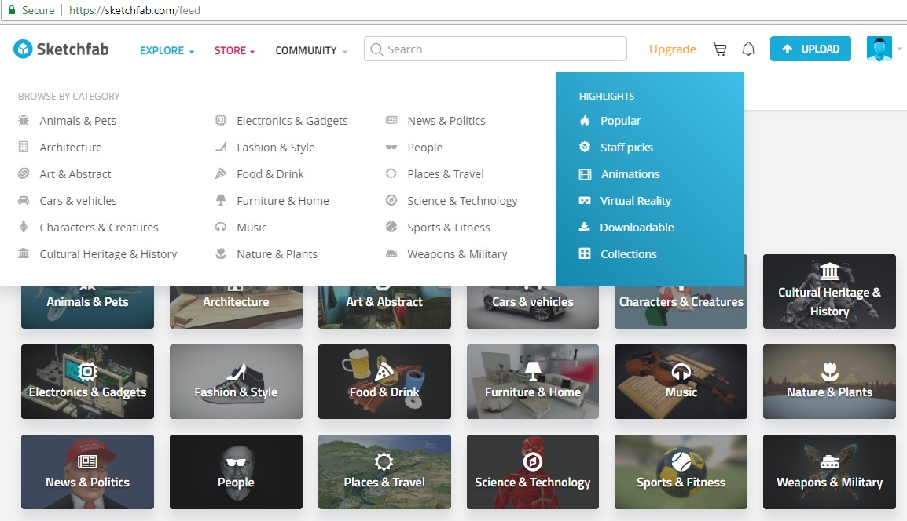
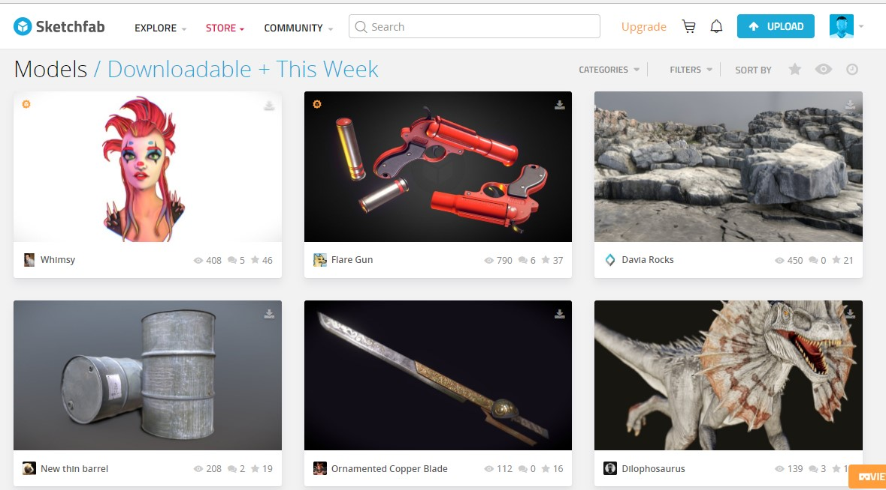
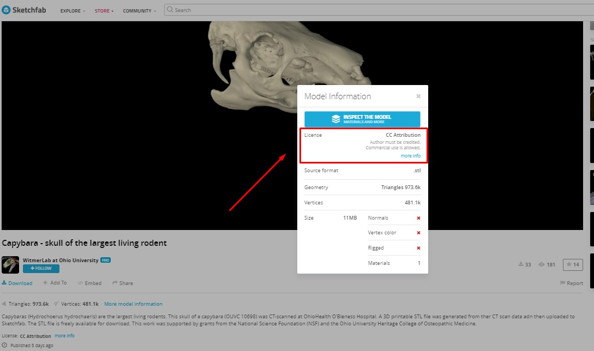

Konten Format Model 3 Dimensi Berilsensi CC di Platform Sketchfab

Sketchfab adalah platform yang berupaya memberdayakan cara baru berkreasi, yaitu kreasi model 3 Dimensi (3D), yang memudahkan siapa saja untuk mengumumkan dan menggunakan konten model 3D dalam format seperti Web, AR, dan VR. Platform ini menjadi salah satu penyedia konten model 3D yang terbesar dengan jumlah pengguna lebih dari 1 juta yang telah memublikasikan jutaan model 3D. Terdapat 18 kategori konten yang tersedia seperti Animals & Pets, Art & Abstract, Cultural History & Heritage dan lain-lain sebagainya.
Pada situs web Sketchfab terdapat 3 menu utama yaitu menu “Explore” untuk menelusuri koleksi model 3D yang dipublikasikan oleh para pengguna situs, menu “Store” yang menampilkan koleksi model 3D berbayar, dan selanjutnya menu “Community” yang disediakan agar para penggunanya dapat saling berinteraksi satu sama lain untuk memeroleh informasi terbaru.
Konten-konten format model 3D yang dapat dapat diunggah langsung secara umumnya bersifat gratis dapat disebarkan tanpa izin langsung kepada pencipta konten tersebut dan legal. Hal itu dikarenakan konten-konten tersebut menerapkan lisensi terbuka Creative Commons (CC). Namun pengguna konten format 3D tetap harus menaati ketentuan lisensi CC yang diterapkan pada konten tersebut dengan ragam ketentuan sebagai berikut:
 - Atribusi (BY)
- Atribusi (BY)
Spektrum ini berfungsi sebagai pembebanan kewajiban terhadap pengguna ciptaan untuk mencantumkan nama yang sesuai, mencantumkan tautan terhadap lisensi, dan menyatakan perubahan yang dibuat jika ada. Pengguna ciptaan dapat menerapkan atribusi yang sesuai dengan informasi yang tersedia pada ciptaan yang dibagikan. Ingat , pemberian izin penggunaan konten kepada Anda bukan berarti pencipta mendukung tujuan penggunaan Anda, jadi hal ini bukan merupakan pernyataan dukungan.
 - BerbagiSerupa (SA)
- BerbagiSerupa (SA)
Spektrum ini hanya berlaku ketika ciptaan diubah, digubah, dan dibuat turunannya. Hasil perubahan, penggubahan, atau ciptaan turunan yang dibuat wajib menerapkan lisensi yang sama apabila materi asli menerapkan ketentuan ini.
 - NonKomersial (NC)
- NonKomersial (NC)
Spektrum ini melarang pengguna ciptaan dalam menggunakan ciptaan untuk kepentingan komersial.
 - TanpaTurunan (ND)
- TanpaTurunan (ND)
Spektrum ini melarang pengguna ciptaan untuk mengumumkan setiap hasil pengubahan, penggubahan atau pembuatan ciptaan turunan dari ciptaan.
Dari keempat spektrum tersebut tersedia 6 pilihan lisensi CC yang diterapkan oleh pencipta pada ciptaanya. Keenam pilihan lisensinya yakni Creative Commons Atribusi (CC BY), Creative Commons Atribusi BerbagiSerupa (CC-BY SA), Creative Commons Atribusi NonKomersial (CC-BY-NC), Creative Commons Atribusi TanpaTurunan (CC-BY-ND), seperti Creative Commons Atribusi NonKomersial BerbagiSerupa (CC-BY-NC-SA),Creative Commons Atribusi NonKomersial TanpaTurunan (CC-BY-NC-ND). Pada Stetchfab hanya tersedia 4 pilihan lisensi CC bagi pencipta untuk diterapkan pada ciptaanya yakni: CC BY, CC-BY SA, CC-BY-NC, CC-BY-ND.
Setelah mengetahui ketentuan dan pilihan lisensi CC, berikut panduan dalam mencari konten berformat model 3D yang berlisensi CC pada platform Sketchfab:
- Akes situs web sketchfab.com/

2. Klik “explorer” dan pilih “downloadable”.

3. Cari konten format model 3 dimensi yang diinginkan.

Untuk mengetahui ketentuan lisensi CC yang diterapkan pada model 3D tersebut, Anda dapat melihat keterangan dibawah gambar model dan penjelasan lebih lanjut dapat Anda baca dengan mengklik tautan pada teks ketentuan lisensi yang tertera.

untuk lebih jelas Anda dapat klik “more model information”. Maka akan muncul tampilan sebagai berikut:

Hasil unggahan format model 3D dapat disebarkan kembali pengguna ke suatu situs web, dicetak melalui mesin pencetak model 3D, ataupun dapat dimanfaatkan pembuatan permainan video dan bentuk-bentuk penggunaan kembali lainya.
Koleksi The Brtish Museum di Sketchfab

Dari situs web creativecommons.org,pada tahun 2017 The Brtish Museum menerbitkan 128 koleksi museumnya yang telah didigitalisasikan dalam format model 3D dan dilisensikan CC ke platform Sketchfab.

Dan kini koleksi The British Museum yang ada di platform Sketchfab telah bertambah menjadi 249 koleksi dan akan terus bertambah. Koleksi-koleksi tersebut dapat dilihat pada akun The British Museum.
Tags:
Oleh:
2 Aug 2018Kategori:
Berita Terbaru
- Lokakarya Hak Cipta dan Lisensi Creative Commons di Pekanbaru
- Pengumuman Resmi: Hasil Akhir Training of Trainers Creative Commons Indonesia
- Literatur tentang Model Bisnis Terbuka "Made With CC"
- Data dan Artikel Ilmiah Terbuka dari PLOS!
- Konten Format Model 3 Dimensi Berilsensi CC di Platform Sketchfab